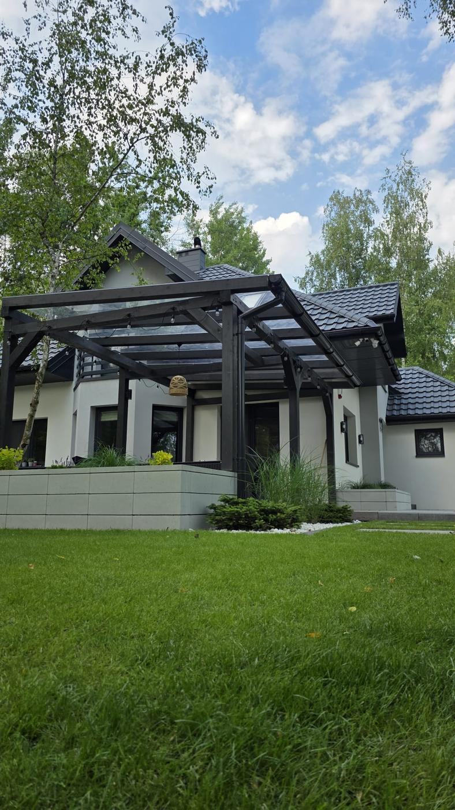
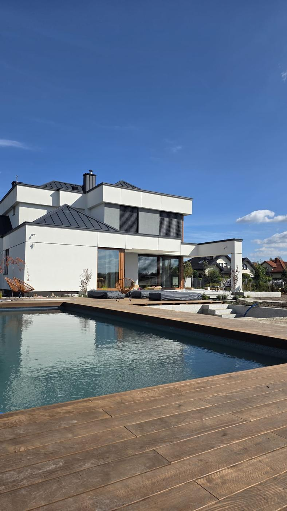
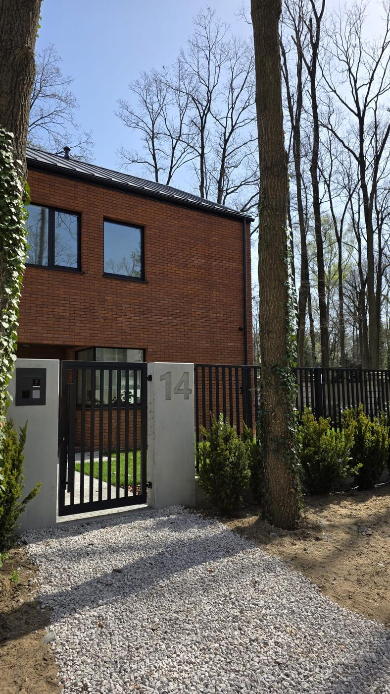

Nasze usługi
Kompleksowo realizujemy ogrody i ich otoczenie — od koncepcji po ostatni detal.
Ogrody i pergole
Projektujemy i zakładamy ogrody „pod klucz", a także montujemy pergole. Od koncepcji i doboru roślin, przez trawniki, ścieżki i oświetlenie, po zacienione miejsca odpoczynku — wszystko dopasowane do działki, domu i stylu życia.
- Projekt koncepcyjny i wykonawczy
- Nasadzenia, trawniki, nawadnianie
- Pergole i mała architektura

Baseny i stawy kąpielowe
Baseny oraz naturalne stawy kąpielowe — strefy relaksu z wodą, zaprojektowane i wykonane tak, by stały się sercem ogrodu i miejscem odpoczynku dla całej rodziny, w zgodzie z naturą.
- Projekt i budowa basenu lub stawu
- Naturalna filtracja i strefy roślinne
- Integracja z resztą ogrodu

Bramy i ogrodzenia
Ogrodzenie i brama to wizytówka posesji. Projektujemy i wykonujemy estetyczne, trwałe rozwiązania, które komponują się z ogrodem i architekturą budynku — od doboru materiałów po precyzyjny montaż.
- Dobór stylu i materiałów
- Bramy, furtki i automatyka
- Trwałe, precyzyjne wykonanie

Nawierzchnie i tarasy
Nawierzchnie, ścieżki, podjazdy i tarasy — solidne i eleganckie wykończenie, które łączy wszystkie elementy ogrodu w spójną, funkcjonalną całość.
- Kostka, kamień, nawierzchnie ozdobne
- Tarasy drewniane i kompozytowe
- Ścieżki, podjazdy i obrzeża

Uzupełniające usługi
Dbamy o ogród kompleksowo — również po zakończeniu realizacji.
Dobrze wiedzieć
Tak. Prowadzimy projekt kompleksowo — od koncepcji przygotowanej przez architekta, przez pełną realizację, aż po odbiór i pielęgnację. Nad całością czuwa koordynator projektu.
Tak. Wstępną konsultację i wycenę wykonujemy bezpłatnie i niezobowiązująco.
To zależy od zakresu i wielkości działki. Mniejsze realizacje zajmują kilka dni, kompleksowe ogrody czy stawy — od dwóch do kilku tygodni. Harmonogram ustalamy przy wycenie.
Który obszar Cię interesuje?
Napisz, co chcesz zrealizować — przygotujemy koncepcję i bezpłatną wycenę.